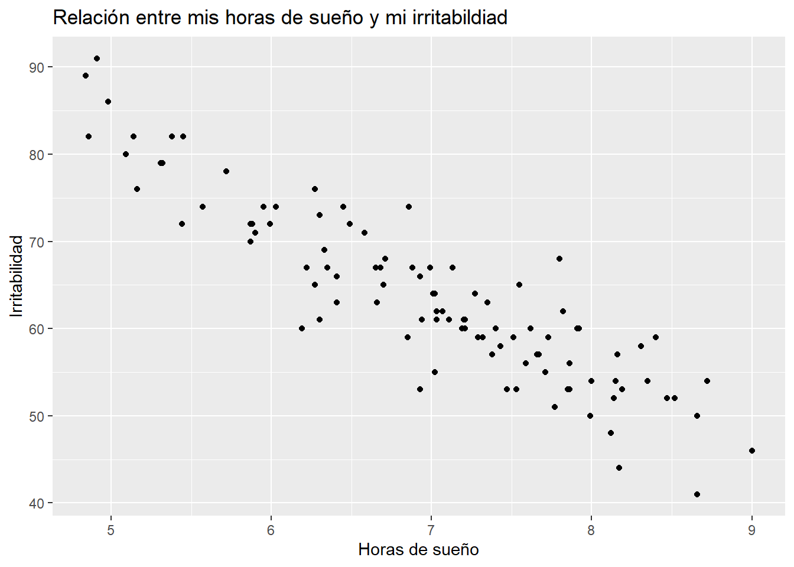
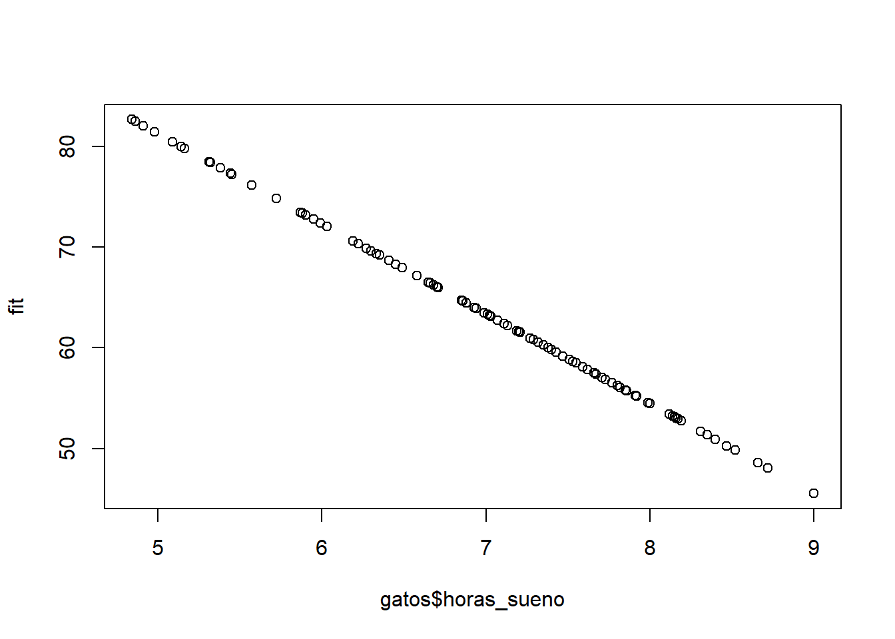
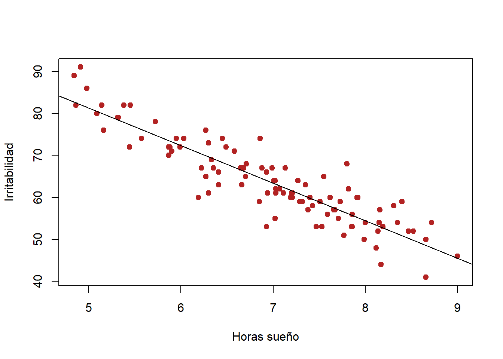
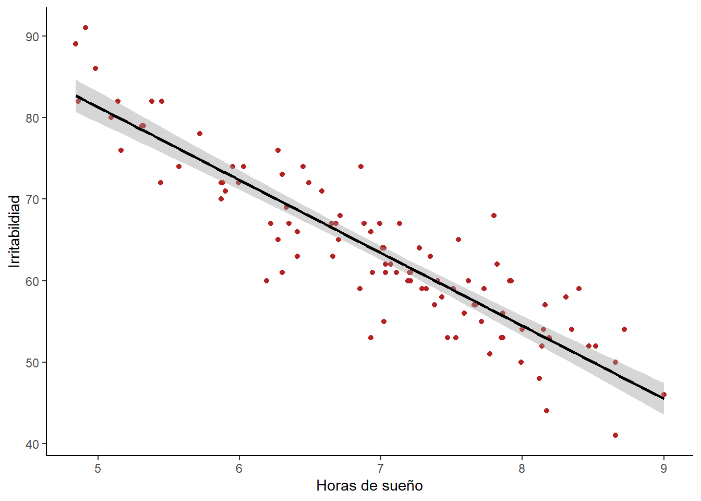
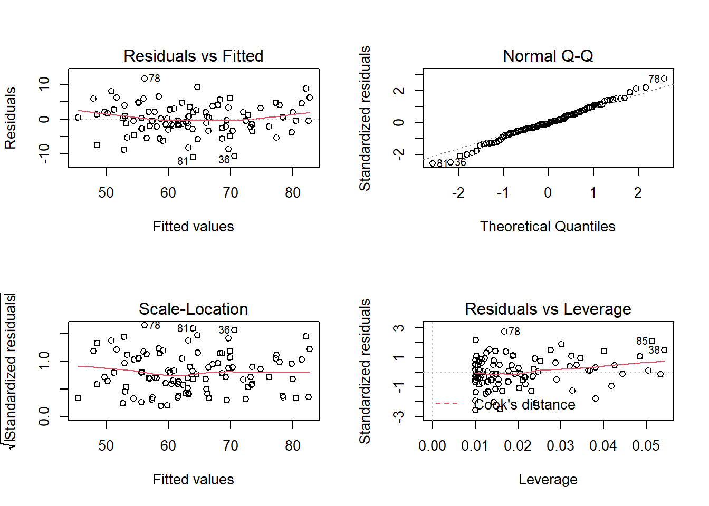
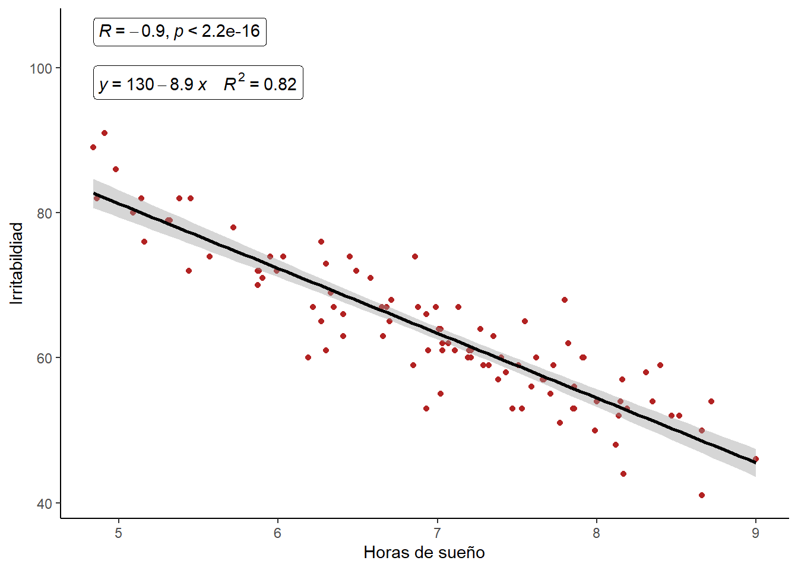
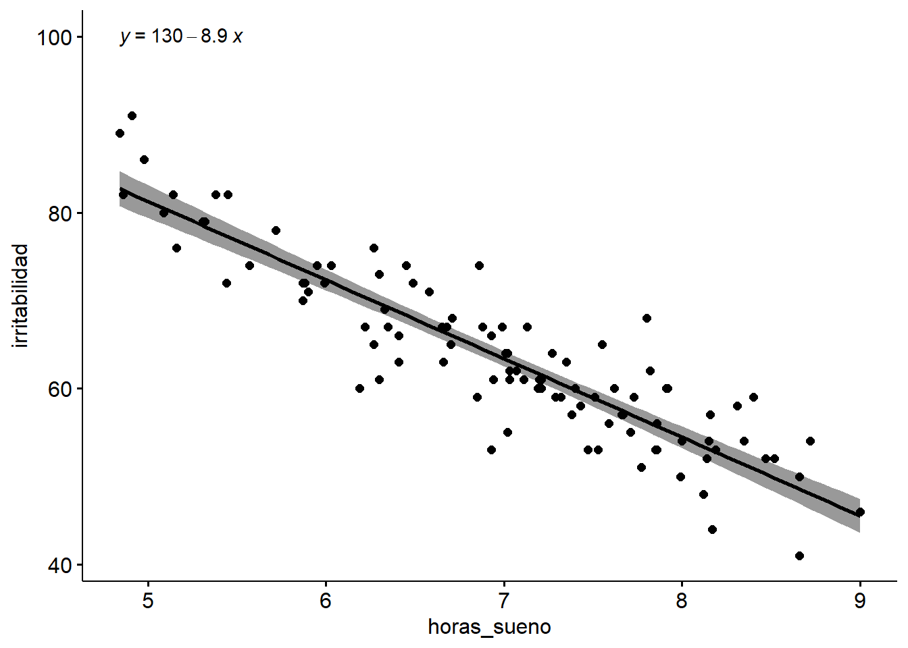
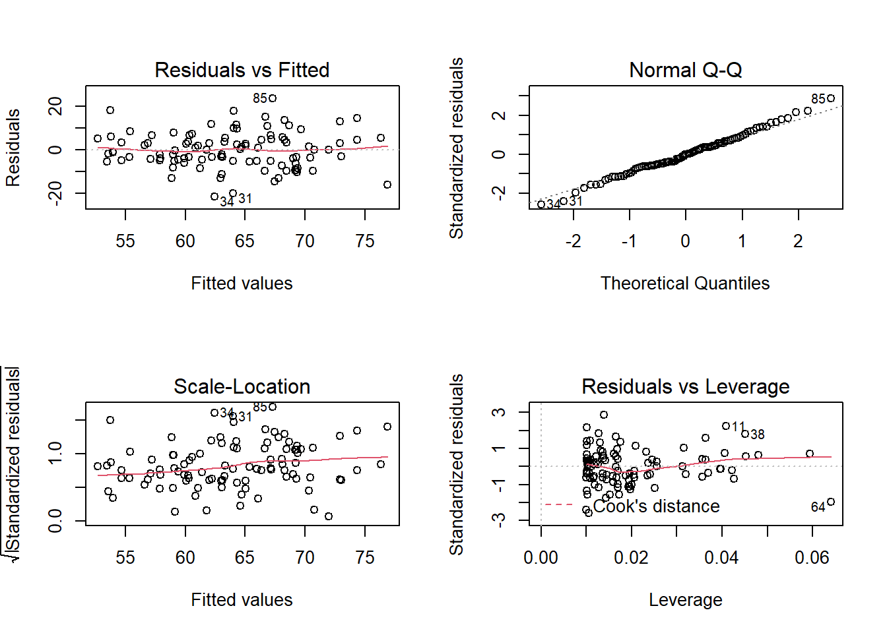
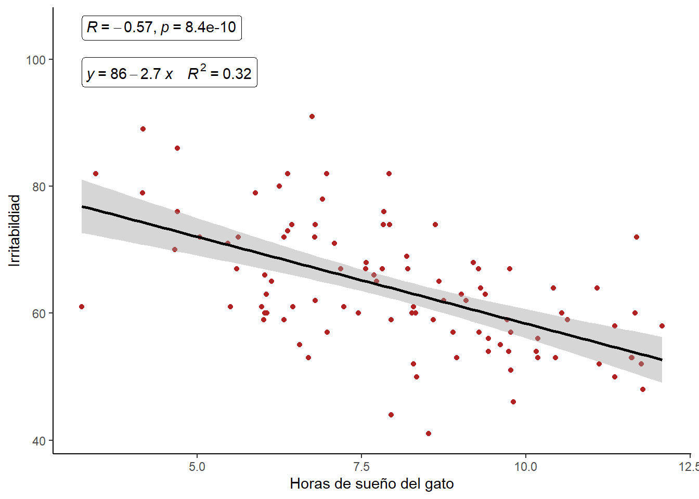

Regresión lineal simple
Miguel Tripp
2021-07-05
Last updated: 2021-07-31
Checks: 7 0
Knit directory: 2021/
This reproducible R Markdown analysis was created with workflowr (version 1.6.2). The Checks tab describes the reproducibility checks that were applied when the results were created. The Past versions tab lists the development history.
Great! Since the R Markdown file has been committed to the Git repository, you know the exact version of the code that produced these results.
Great job! The global environment was empty. Objects defined in the global environment can affect the analysis in your R Markdown file in unknown ways. For reproduciblity it’s best to always run the code in an empty environment.
The command set.seed(20210412) was run prior to running the code in the R Markdown file. Setting a seed ensures that any results that rely on randomness, e.g. subsampling or permutations, are reproducible.
Great job! Recording the operating system, R version, and package versions is critical for reproducibility.
Nice! There were no cached chunks for this analysis, so you can be confident that you successfully produced the results during this run.
Great job! Using relative paths to the files within your workflowr project makes it easier to run your code on other machines.
Great! You are using Git for version control. Tracking code development and connecting the code version to the results is critical for reproducibility.
The results in this page were generated with repository version b4e67dc. See the Past versions tab to see a history of the changes made to the R Markdown and HTML files.
Note that you need to be careful to ensure that all relevant files for the analysis have been committed to Git prior to generating the results (you can use wflow_publish or wflow_git_commit). workflowr only checks the R Markdown file, but you know if there are other scripts or data files that it depends on. Below is the status of the Git repository when the results were generated:
Ignored files:
Ignored: .Rhistory
Ignored: .Rproj.user/
Ignored: analysis/hero-image.html
Ignored: analysis/poke_logo.png
Untracked files:
Untracked: Curso_Bioestadistica_MTripp_cuatriII.docx
Untracked: Curso_Bioestadistica_MTripp_cuatriII.pdf
Untracked: Diapositivas/
Untracked: Prueba_markdown.Rmd
Untracked: Prueba_markdown.pdf
Untracked: README.html
Untracked: Resources/
Untracked: Tarea_Tstudent.Rmd
Untracked: Tarea_Tstudent.docx
Untracked: Tarea_Tstudent.html
Untracked: Tarea_Tstudent.pdf
Untracked: analysis/Clase13_noParam.Rmd
Untracked: analysis/hero_backgroud.jpg
Untracked: analysis/images/
Untracked: analysis/style.css
Untracked: analysis/test.Rmd
Untracked: code/tarea_macrograd.R
Untracked: data/CS_subset.csv
Untracked: data/Consumo_oxigeno_wide.csv
Untracked: data/Darwin_esp.csv
Untracked: data/Data_enzimas_Experimento1.txt
Untracked: data/Data_enzimas_Experimento2.txt
Untracked: data/Data_enzimas_Experimento3.txt
Untracked: data/Data_enzimas_Experimento4.txt
Untracked: data/DownloadFestival(No Outlier).dat
Untracked: data/Festival.csv
Untracked: data/Hful_metabolitos_ver2.csv
Untracked: data/Longitud_noParam.csv
Untracked: data/LungCapData.txt
Untracked: data/LungCapDataEsp.csv
Untracked: data/PalmerPenguins.csv
Untracked: data/Pokemon_tabla.csv
Untracked: data/Pokemon_tabla.xls
Untracked: data/RExam.dat
Untracked: data/Rexamendat.csv
Untracked: data/Tabla1_Muestreo.txt
Untracked: data/Transcriptome_Anotacion.csv
Untracked: data/Transcriptome_DGE.csv
Untracked: data/Vinogradov_2004_Titanic.tab
Untracked: data/Vinogradov_2004_Titanic.tab.csv
Untracked: data/data_tukey.txt
Untracked: data/exp_macrogard_growth.tab
Untracked: data/exp_macrogard_rna-dna.tab
Untracked: data/fertilizantes_luz.csv
Untracked: data/gatos_sueno.csv
Untracked: data/macrogard_crecimiento.csv
Untracked: data/pokemon_extended.csv
Untracked: output/Plot_all_penguins.pdf
Untracked: output/Plot_all_penguins.tiff
Untracked: output/graficos/
Unstaged changes:
Modified: analysis/_site.yml
Note that any generated files, e.g. HTML, png, CSS, etc., are not included in this status report because it is ok for generated content to have uncommitted changes.
These are the previous versions of the repository in which changes were made to the R Markdown (analysis/Clase11_regresion.Rmd) and HTML (docs/Clase11_regresion.html) files. If you’ve configured a remote Git repository (see ?wflow_git_remote), click on the hyperlinks in the table below to view the files as they were in that past version.
| File | Version | Author | Date | Message |
|---|---|---|---|---|
| html | 03db7ff | Miguel Tripp | 2021-07-25 | Build site. |
| html | fcb9047 | Miguel Tripp | 2021-07-25 | Build site. |
| html | 2adc7a9 | Miguel Tripp | 2021-07-24 | Build site. |
| html | 9d09420 | Miguel Tripp | 2021-07-22 | Build site. |
| html | 0f7eb2d | Miguel Tripp | 2021-07-12 | Build site. |
| html | 82e4deb | Miguel Tripp | 2021-07-08 | Build site. |
| html | bc7c1d7 | Miguel Tripp | 2021-07-07 | Build site. |
| Rmd | 66fe2bf | Miguel Tripp | 2021-07-07 | Publish the initial files for myproject |
1 Generalidades
La correlación lineal y la regresión lineal simple son métodos estadísticos que estudian la relación lineal existente entre dos variables.Sin embargo, es importante recalcar las diferencias entre ambos métodos:
En la correlación no es necesario pensar en la relación causa y efecto, solamente nos interesa saber como dos variables están relacionadas entre ellas. Por otro lado, en la regresión si debemos pensar en causa y efecto. La regresión encuentra la línea que mejor prediga Y a partir de X, y que esa linea no es la misma que la predicción de X a partir de Y.
A nivel experimental, la correlación se suele emplear cuando ninguna de las variables se ha controlado, simplemente se han medido ambas y se desea saber si están relacionadas. En el caso de estudios de regresión lineal, es más común que una de las variables se controle (tiempo, concentración de reactivo, temperatura…) y se mida la otra.
Normalmente los estudios de correlación lineal preceden a la generación de modelos de regresión lineal. Primero se analiza si ambas variables están correlacionadas y, en caso de estarlo, se procede a generar el modelo de regresión.
En la descripción de la ANOVA, vimos como los minimos cuadrados son implementaods dentro la función lm() para ajustar un modelo con variables categoricas (factores). A diferencia de la ANOVA y la T de Student, el objetivo de la regresión no es probar una hipótesis sino estimar una relación que pueda ser usado para predicción.
La construcción de un modelo nos permite entender las relaciones entre las variables y hacer predicciones usando futuras observaciones.
1.1 Modelo lineal
La regresión lineal simple consiste en generar un modelo de regresión (ecuación de una recta) que permita explicar la relación lineal que existe entre dos variables. A la variable dependiente o respuesta se le identifica como \(Y\) y a la variable predictora o independiente como \(X\).
El modelo de regresión lineal simple se describe de acuerdo a la ecuación:
\(Y=\beta_0 + \beta_1 X_i + \epsilon\)
Siendo \(\beta_0\) la ordenada en el origen, \(\beta_1\) la pendiente y \(\epsilon\) el error aleatorio. Este último representa la diferencia entre el valor ajustado por la recta y el valor real. Recoge el efecto de todas aquellas variables que influyen en Y pero que no se incluyen en el modelo como predictores. Al error aleatorio también se le conoce como residuo.
Usualmente los estudios de regresión tienen el objetivo de estimar un modelo que explique la relación entre dos variables de una población, lo cual se realiza a partir de la relación que se observa en la muestra y que, por lo tanto, esta sujeta a variaciones. Por lo tanto, para cada uno de los parámetros de la ecuación de regresión lineal simple (\(\beta_0\) y \(\beta_1\)) se alcula su significancia (valor p) y su intervalo de confianza. El test estadístico más empleado es el t-test (existen alternativas no paramétricas).
De esta manera, el test de significancia para la pendiente (\(\beta_1\)) del modelo lineal considera como hipótesis:
\(H_0\): No hay relación lineal entre ambas variables por lo que la pendiente del modelo lineal es cero. \(\beta_1 = 0\)
\(H_A\): Sí hay relación lineal entre ambas variables por lo que la pendiente del modelo lineal es distinta de cero. \(\beta_1 \neq 0\)
De esta misma forma también se aplica a (\(\beta_0\))
2 Ejemplo Gatos y horas de sueño
Estos datos son una adaptación del ejemplo descrito en Navarro, Learning statistics with R: A tutorial for psychology students and other beginners.. Supongan que queremos saber que tanto afecta los hábitos de sueño de mi gato en mi estado de animo. Para esto, se califica mi nivel de irritabilidad en una escala de 0 (nada irritado) al 100 (muy irritado). Supongan también que se ha medido mi estado de animo, las horas de sueño del gato y mis horas de sueños por 100 días.

library(tidyverse)
gatos_url <- "https://raw.githubusercontent.com/trippv/Miguel_Tripp/master/gatos_sueno.csv"
gatos <- read_csv(gatos_url)2.0.1 Representación gráfica y relación entre variables
El primer paso antes de generar un modelo de regresión es representar los datos para poder intuir si existe una relación y cuantificar dicha relación mediante un coeficiente de correlación. Si en este paso no se detecta la posible relación lineal, no tiene sentido seguir adelante generando un modelo lineal (se tendrían que probar otros modelos).
ggplot(gatos, aes(x = horas_sueno, y = irritabilidad))+
geom_point()+
labs(x = "Horas de sueño", y = "Irritabilidad",
title = "Relación entre mis horas de sueño y mi irritabildiad")
cor.test(gatos$horas_sueno, gatos$irritabilidad, method = "pearson")
Pearson's product-moment correlation
data: gatos$horas_sueno and gatos$irritabilidad
t = -20.854, df = 98, p-value < 2.2e-16
alternative hypothesis: true correlation is not equal to 0
95 percent confidence interval:
-0.9340614 -0.8594714
sample estimates:
cor
-0.903384 El gráfico y la prueba de correlación muestran una relación lineal negativa (r = -0.90) y significativa (p < 0.0001). Tiene sentido generar un modelo de regresión lineal que permita predecir mi irritabildiad en función de mis horas de sueño.
2.0.2 modelo
regresion.1 <- lm(irritabilidad ~ horas_sueno, data = gatos)Como vimos en el capitulo de ANOVA, el objeto lm() contiene una gran cantidad de información con respecto a los coeficientes. Pero podemos obtener la información básica si simplemente ejemcutamos
print(regresion.1)
Call:
lm(formula = irritabilidad ~ horas_sueno, data = gatos)
Coefficients:
(Intercept) horas_sueno
125.956 -8.937 Esto nos proporciona información de (1) el modelo que le especificamos a R y (2) los valores de intercepto (\(\beta_0 = 125.956\)) y la pendiente (\(\beta_1 = -8.93\)). Esto significa que el modelo lineal que mejor se ajusta a nuestro datos tiene la forma:
\(Y = -8.94 X_i + 125.96\)
es decir:
\(Irritabilidad = -8.94(horas sueño) + 125.96\)
En este modelo, \(\beta_1\) (la pendiente) implica que por cada unidad de sueño que se incremente, mi irritabilidad se disminuira por 8.94 puntos. Por otro lado \(\beta_0\) (el intercepto) corresponde al valor espeerado de \(Y_i\) cuando \(X_i = 0\), es decir, si tengo 0 horas de sueño, mi nivel de irritabilidad estará en niveles exorbitantes ($Y_i = 125.9)
Para ver la validez del modelo podemos usar la función summary()
summary(regresion.1)
Call:
lm(formula = irritabilidad ~ horas_sueno, data = gatos)
Residuals:
Min 1Q Median 3Q Max
-11.025 -2.213 -0.399 2.681 11.750
Coefficients:
Estimate Std. Error t value Pr(>|t|)
(Intercept) 125.9563 3.0161 41.76 <2e-16 ***
horas_sueno -8.9368 0.4285 -20.85 <2e-16 ***
---
Signif. codes: 0 '***' 0.001 '**' 0.01 '*' 0.05 '.' 0.1 ' ' 1
Residual standard error: 4.332 on 98 degrees of freedom
Multiple R-squared: 0.8161, Adjusted R-squared: 0.8142
F-statistic: 434.9 on 1 and 98 DF, p-value: < 2.2e-16La primera columna (Estimate) devuelve el valor estimado para los dos parámetros de la ecuación del modelo lineal (a y b) que equivalen a la ordenada en el origen y la pendiente.
Se muestran los errores estándar, el valor del estadístico t y el p-value (dos colas) de cada uno de los dos parámetros. Esto permite determinar si los parámetros son significativamente distintos de 0.
Para el modelo generado, tanto la ordenada en el origen (intercepto) como la pendiente son significativas (p-values < 0.001).
Es posibl eobtener los intervalos de confianza para los parámetros del modelo
confint(regresion.1) 2.5 % 97.5 %
(Intercept) 119.971000 131.94158
horas_sueno -9.787161 -8.08635El valor de R2 indica que el modelo calculado explica el 81% de la variabilidad presente en la variable respuesta mediante la variable independiente.
El p-value obtenido en el test F determina que sí es significativamente superior la varianza explicada por el modelo en comparación a la varianza total. Es el parámetro que determina si el modelo es significativo y por lo tanto se puede aceptar.
2.0.3 Línea de regresión
Una vez generado un modelo es posible predecir el valor de la variable dependiente \(Y\) para un set nuevo de valores de nuestra variable predictroa \(X\). Sin embargo es importante considerar que las predicciones deben limitarse al intervalo de valores con los que se ha generado el modelo. Esto es importante puesto que solo en esta región se tiene certeza de que se cumplen las condiciones para que el modelo sea válido. Para calcular las predicciones se emplea la ecuación generada por regresión.
Para extraer los valores ajustados del modelo para cada valor observado podemos utilizar la función fitted()
fit <- fitted(regresion.1)
head(fit) 1 2 3 4 5 6
58.12631 55.26655 80.02137 57.05390 66.25876 72.42512 # Graficar los valores ajsutados. Recordar que nuestro modelo lo definimos como irritabilidad ~ horas de sueño
plot(gatos$horas_sueno, fit)
y de igual manera podemos extraer los residuales (diferencia entre el valor observado - el valor esperado) con la función residuals()
residuales <- residuals(regresion.1)
head(residuales) 1 2 3 4 5 6
-2.1263150 4.7334469 1.9786333 -2.0539043 0.7412372 -0.4251243 Para realizar la representación gráfica de nuestro modelo, podemos utilizar diferentes alternativas
- R base
plot(gatos$horas_sueno, gatos$irritabilidad, col = "firebrick", pch = 19, ylab = "Irritabilidad", xlab = "Horas sueño")
abline(regresion.1)
Alternativamente, Para poder representar el intervalo de confianza a lo largo de todo el modelo se recurre a la función predict(). Con esto es posible generar una gráfica de regresión con los intervalos de confianza superiores e inferiores del 95%. Esto permite identificar la región en la que, según el modelo generado y para un determinado nivel de confianza, se encuentra el valor promedio de la variable dependiente.
Para poder representar el intervalo de confianza a lo largo de todo el modelo se recurre a la función predict() para predecir valores que abarquen todo el eje \(X\).
xseq <- seq(from = min(gatos$horas_sueno),
to = max(gatos$horas_sueno),
length.out = 100)
# se genera la predicción de los valores de irritabilidad utilizando el modelo generado
irritabilidad_pred <- predict(object = regresion.1,
newdata = data.frame(horas_sueno = xseq),
interval = "confidence", level = 0.95)
head(irritabilidad_pred) fit lwr upr
1 82.70239 80.70111 84.70368
2 82.32687 80.35779 84.29595
3 81.95134 80.01435 83.88834
4 81.57582 79.67079 83.48085
5 81.20030 79.32708 83.07351
6 80.82477 78.98324 82.66631y añadimos al gráfico las lineas formadas por los limites inferior y superior
plot(gatos$horas_sueno, gatos$irritabilidad, col = "firebrick", pch = 19, ylab = "Irritabilidad", xlab = "Horas sueño")
abline(regresion.1)
lines(x = xseq, y = irritabilidad_pred[,2],type = "l", col = 2, lty = 3)
lines(x = xseq, y = irritabilidad_pred[,3],type = "l", col = 3, lty = 3)
- La función geom_smooth() del paquete ggplot2 genera la regresión y su intervalo de forma directa.
ggplot(gatos, aes(x = horas_sueno, y = irritabilidad))+
geom_point(color = "firebrick")+
geom_smooth(method = "lm", se = TRUE, color = "black")+
labs(x = "Horas de sueño", y = "Irritabildiad")+
theme_classic()`geom_smooth()` using formula 'y ~ x'
2.0.4 Validez del modelo
Tal como hemos visto hasta ahora, la función lm() realiza un análisis de minimos cuadrados el cual asume que los residuales tienen una distribución cercana a la normal. La varianza (o desviación estandar) debe ser aproximadamente constante a lo largo de la variable de respuesta.
Podemos usar la función plot() en nuestro modelo para evaluar visualmente si los residuales del modelo cumplen con estas condiciones.
par(mfrow = c(2,2))
plot(regresion.1)
dev.off()null device
1 Ejercicio: Calcula de forma manual asi como con la función predict (incluye los intervalos de confianza) cual sería mi valor de irritabilidad cuando duermo 3 y 12 horas
#función predict
E1 <- data.frame(horas_sueno = c(3, 12))
predict(object = regresion.1,
newdata = E1,
interval = "confidence", level = 0.95)
# Manualmente
E1_3h <- coef(regresion.1)[2] * E1[1,1] + coef(regresion.1)[1]
E1_12h <- coef(regresion.1)[2] * E1[2,1] + coef(regresion.1)[1]2.0.5 Añadir la ecuación del modelo al gráfico
Para realizar esto, ggpubr tiene una función que nos va a facilitar mucho la vida la cual es stat_regline_equatio y que se incluye como un nuevo layer dentro de ggplot. Puedes econtrar mas información de esta función aqui
library(ggpubr)
ggplot(gatos, aes(x = horas_sueno, y = irritabilidad))+
geom_point(color = "firebrick")+
geom_smooth(method = "lm", se = TRUE, color = "black")+
stat_cor(label.y = 105, geom = "label") +
stat_regline_equation(label.y = 98,
aes(label = paste(..eq.label.., ..rr.label.., sep = "~~~~")),
geom = "label")+
labs(x = "Horas de sueño", y = "Irritabildiad")+
theme_classic()`geom_smooth()` using formula 'y ~ x'
ggscatter(gatos, x = "horas_sueno", y = "irritabilidad", add = "reg.line", conf.int = TRUE)+
stat_regline_equation(label.y = 100)`geom_smooth()` using formula 'y ~ x'
2.1 Sueño del gato
Ahora vamos ajustar un modelo lineal para predecir mi nivel de irritabilidad en función que de que tanto duerman los gatos en la noche
regresion.2 <- lm(irritabilidad ~ sueno_gatos, data = gatos)
summary(regresion.2)
Call:
lm(formula = irritabilidad ~ sueno_gatos, data = gatos)
Residuals:
Min 1Q Median 3Q Max
-21.4190 -5.0049 -0.0587 4.9567 23.7275
Coefficients:
Estimate Std. Error t value Pr(>|t|)
(Intercept) 85.7817 3.3528 25.585 < 2e-16 ***
sueno_gatos -2.7421 0.4035 -6.796 8.45e-10 ***
---
Signif. codes: 0 '***' 0.001 '**' 0.01 '*' 0.05 '.' 0.1 ' ' 1
Residual standard error: 8.327 on 98 degrees of freedom
Multiple R-squared: 0.3203, Adjusted R-squared: 0.3134
F-statistic: 46.18 on 1 and 98 DF, p-value: 8.448e-10Evaluación del modelo
par(mfrow = c(2,2))
plot(regresion.2)
y gráficamos la disperción de los datos con el modelo de regresión
ggplot(gatos, aes(x = sueno_gatos, y = irritabilidad))+
geom_point(color = "firebrick")+
geom_smooth(method = "lm", se = TRUE, color = "black")+
stat_cor(label.y = 105, geom = "label") +
stat_regline_equation(label.y = 98,
aes(label = paste(..eq.label.., ..rr.label.., sep = "~~~~")),
geom = "label")+
labs(x = "Horas de sueño del gato", y = "Irritabildiad")+
theme_classic()`geom_smooth()` using formula 'y ~ x'
3 Preguntas frecuentes
Esta sección esta tomada del libro de Motuslky. Intuitive Biostatistics
- ¿La línea de regresión será la misma si intercambiamos \(X\) y \(Y\)?
La regresión lineal ajusta un modelo que predice \(Y\) a partir de \(X\). Si intercambiamos las definiciones de \(X\) y \(Y\) la línea de regresión será diferente a menos que los puntos esten alineados perfectamente. Sin embargo, intercambiar \(X\) y \(Y\) no cambiará el valor de \(R^2\)
- ¿Puede \(R^2\) tener un valor de 0 o negativo?
\(R^2\) tendrá un valor de 0 si no hay ninguna tendencia en lo absoluto entre \(X\) y \(Y\) por lo que la línea de mejor ajuste será una línea horizontal. \(R^2\) no puede tener valores negativos en una regresión lineal pero es posible observarlos en regresiones no lineales.
- Si analizamos un mismo set de datos con regresión lineal y correlación ¿como podemos comparar ambos resultados?
Si elevas al cuadrado el coeficiente de correlacion (\(r\)), el valor será igual a \(R^2\) de una regresión lineal. El valor \(P\) de la hipótesis nula de que el coeficiente de correlación de la población es 0 será equivalente a el valor \(P\) de la hipótesis nula de que la pendiente de la poblacion es 0.
sessionInfo()R version 4.0.5 (2021-03-31)
Platform: x86_64-w64-mingw32/x64 (64-bit)
Running under: Windows 10 x64 (build 19043)
Matrix products: default
locale:
[1] LC_COLLATE=English_United States.1252
[2] LC_CTYPE=English_United States.1252
[3] LC_MONETARY=English_United States.1252
[4] LC_NUMERIC=C
[5] LC_TIME=English_United States.1252
attached base packages:
[1] stats graphics grDevices utils datasets methods base
other attached packages:
[1] ggpubr_0.4.0 forcats_0.5.1 stringr_1.4.0 dplyr_1.0.5
[5] purrr_0.3.4 readr_1.4.0 tidyr_1.1.3 tibble_3.0.4
[9] ggplot2_3.3.5 tidyverse_1.3.1 workflowr_1.6.2
loaded via a namespace (and not attached):
[1] httr_1.4.2 sass_0.4.0 jsonlite_1.7.2 splines_4.0.5
[5] carData_3.0-4 modelr_0.1.8 bslib_0.2.5.1 assertthat_0.2.1
[9] cellranger_1.1.0 yaml_2.2.1 pillar_1.6.0 backports_1.2.1
[13] lattice_0.20-41 glue_1.4.2 digest_0.6.27 promises_1.1.1
[17] ggsignif_0.6.0 rvest_1.0.0 colorspace_2.0-0 htmltools_0.5.1.1
[21] httpuv_1.5.4 Matrix_1.3-2 pkgconfig_2.0.3 broom_0.7.6
[25] haven_2.3.1 scales_1.1.1 whisker_0.4 openxlsx_4.2.3
[29] later_1.1.0.1 rio_0.5.16 git2r_0.27.1 mgcv_1.8-33
[33] generics_0.1.0 farver_2.0.3 car_3.0-10 ellipsis_0.3.1
[37] withr_2.4.2 cli_2.5.0 magrittr_2.0.1 crayon_1.4.1
[41] readxl_1.3.1 evaluate_0.14 ps_1.5.0 fs_1.5.0
[45] fansi_0.4.2 nlme_3.1-152 foreign_0.8-81 rstatix_0.7.0
[49] xml2_1.3.2 data.table_1.13.6 tools_4.0.5 hms_1.0.0
[53] lifecycle_1.0.0 munsell_0.5.0 reprex_2.0.0 zip_2.1.1
[57] compiler_4.0.5 jquerylib_0.1.4 rlang_0.4.11 grid_4.0.5
[61] rstudioapi_0.13 labeling_0.4.2 rmarkdown_2.9 gtable_0.3.0
[65] abind_1.4-5 DBI_1.1.0 curl_4.3 polynom_1.4-0
[69] R6_2.5.0 lubridate_1.7.10 knitr_1.30 utf8_1.2.1
[73] rprojroot_2.0.2 stringi_1.5.3 Rcpp_1.0.5 vctrs_0.3.8
[77] dbplyr_2.1.1 tidyselect_1.1.1 xfun_0.23